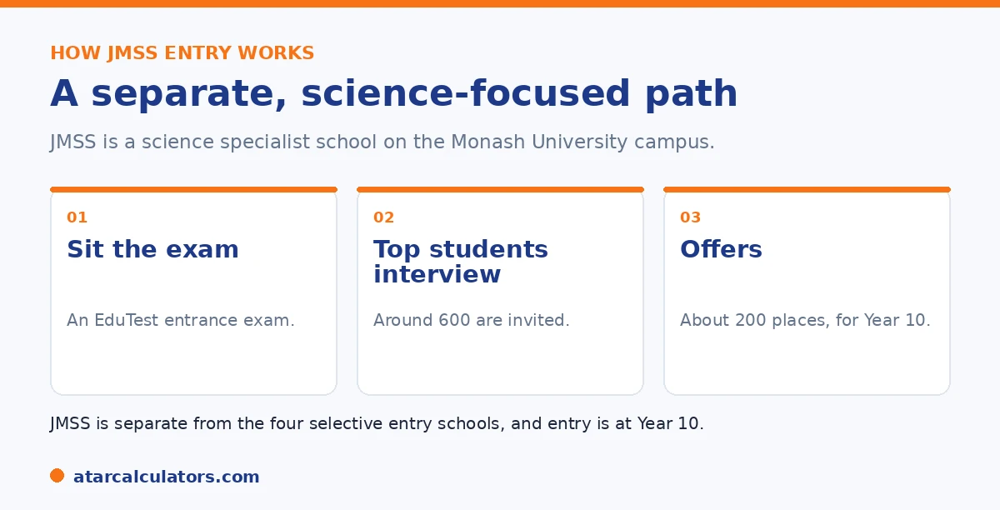

Here is the short version. John Monash Science School, or JMSS, is a government specialist science school on the Monash University campus in Clayton. Entry is at Year 10, not Year 9, and the process is separate from the four selective entry high schools. Students sit an EduTest entrance exam focused on science and maths. The top students, around 600, are invited to an interview, and about 200 are offered a place.
John Monash Science School sits a little apart from Victoria's other selective schools. It is a specialist science school, it takes students from Year 10, and it runs its own selection process.
Below is how entry works and what it looks for. If your child is also considering the four selective entry schools, see our Victorian selective schools guide.
Key takeaways
- JMSS is a specialist science school on the Monash University campus.
- Entry is at Year 10, not Year 9.
- It is separate from the four selective entry high schools.
- Selection starts with an EduTest entrance exam.
- Top students, around 600, are invited to an interview.
- About 200 places are offered each year.
What John Monash Science School is
John Monash Science School is a government, co-educational, selective science school. It sits on the Clayton campus of Monash University, run jointly by the Victorian Government and the university. It opened in 2009, as the state's first specialist science school.

The school specialises in science and technologies, and has around 660 students across Years 10 to 12. It is well known for strong results and for sending students to national science competitions.
Entry is at Year 10
A key difference from the four selective entry high schools is the entry year. JMSS takes students at Year 10, not Year 9. Around 200 places are offered each year, with an even split of around 100 boys and 100 girls.
Because entry is at Year 10, students apply while in Year 9. This also means JMSS is a separate decision from the Year 9 selective entry process, and a child can consider both.
The selection process
Selection is its own process, separate from the ACER exam the four schools use. Students first sit an entrance exam run by EduTest. It tests science and maths ability.
From there, the top students, around 600, are invited to an interview. About 200 of them are then offered a place. Entry is highly competitive, with many thousands of students sitting the exam for those places.
Comparing JMSS with the four selective schools?
See the Victorian selective schools guide →Who JMSS suits
JMSS suits students with a genuine passion for science and technology, who would thrive in a specialist environment. Because the entrance exam focuses on science and maths, a strong, real interest in these areas matters.
It is not the only path for a science-minded student, and the four selective entry high schools also offer strong programs. The right choice depends on your child's interests and how they would suit a specialist setting.
Deciding whether JMSS is the right fit comes down to a few honest questions about your child, not just their ability. JMSS is a specialist senior science and mathematics school. So it suits a student with a genuine, sustained interest in those fields. That is the kind who chooses to read, tinker or problem-solve in science beyond what school needs, rather than one who is simply academically capable across the board. It is a Years 11 and 12 school with a science focus, and its entrance assessment leans heavily on science and maths reasoning. So a student whose strengths and enthusiasm sit squarely there will get the most from it. They will also be surrounded by peers who feel the same, which many find motivating. It is worth weighing the practical and personal side too: JMSS is a move to a new, specialised environment for the final two years. So consider the commute, and whether your child thrives on being immersed with like-minded students or prefers the breadth and familiarity of a general school. A strong all-rounder who is not especially drawn to science may be better served by a selective entry high school, which offers a broad accelerated program rather than a science specialisation. The clearest signal that JMSS fits is a child who lights up at science and maths and actively wants a setting built around them. Where that genuine passion is present, the specialist environment can be an excellent match, and where it is not, a broader school is likely the better choice.
Applying to JMSS
Because JMSS runs its own process, the application and exact dates come from the school, not the central selective entry portal. The process generally runs while a student is in Year 9, for entry into Year 10 the following year.
Always confirm the current requirements, dates, and exam details directly with the school, since a specialist process like this can change. For the four central selective schools, see our Victorian entry test guide.
A STEM-focused selection
John Monash Science School selects for genuine interest and aptitude in science and mathematics, not just a test score. The process looks for students who will thrive in a specialist STEM environment.
So a strong application shows real curiosity and engagement in science and maths, alongside solid academic ability. Fit with the school's focus matters as much as raw results.
The Monash University partnership
JMSS sits on Monash University's campus and partners closely with the university. This shapes its program, giving students access to university facilities, researchers and a strong science and maths culture.
So it is a distinctive setting, built around STEM. That focus is part of what makes it suit some students especially well, and why fit is central to the decision.
Applying and timing
Entry to John Monash Science School is at Year 10, so families apply during Year 9 through the school's own process. That process looks at academic ability and genuine STEM aptitude and interest.
So the timing and pathway differ from the four selective-entry schools. If JMSS interests your child, the year to prepare and apply is Year 9, following the school's specific requirements.
Common questions
What are John Monash Science School's entry requirements?
Entry is at Year 10, through a separate process. Students sit an EduTest entrance exam focused on science and maths, the top students are invited to an interview, and about 200 places are offered each year.
How do you apply to JMSS?
JMSS runs its own application, separate from the central selective entry portal. The process generally runs while a student is in Year 9, for entry into Year 10. Confirm the current dates and requirements directly with the school.
Is JMSS science-focused?
Yes. John Monash Science School is a specialist science school, the state's first, located on the Monash University campus. It specialises in science and technologies, and its entrance exam focuses on science and maths.
What year do students enter JMSS?
Students enter at Year 10, applying while in Year 9. This differs from the four selective entry high schools, which take students at Year 9 through the central ACER process.
How competitive is JMSS entry?
Highly competitive. Many thousands of students sit the entrance exam each year for around 200 places. The top students, around 600, are invited to an interview before offers are made.
Is JMSS one of the four selective entry high schools?
No. JMSS is a separate specialist science school with its own process and entry at Year 10. The four selective entry high schools are Melbourne High, Mac.Robertson, Nossal, and Suzanne Cory.
Compare your Victorian options
See how the selective schools compare, and estimate a result with our free calculator. No signup.
Open the Victorian selective calculator →Related guides
This guide is general information for parents, not formal advice. The Victorian Department of Education and ACER set the rules, and details like dates and the selection categories can change. There are no published cut-off scores, so always confirm current details on the official Victorian selective entry pages. Reviewed by the ATARCalculators Editorial Team.